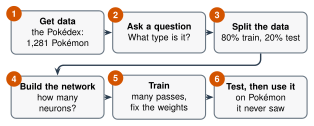

2.6 - Build a Real AI
In Lesson 2.5, the class trained a network of 3 neurons on 8 cards. It took about 20 minutes, and every step was done by hand.
A computer can do the same work on 300 creatures, with many neurons, in a few seconds. Today, you build it yourself. You’ll watch its weights change while it learns.
Your job is to predict what will happen, then train the network, and then test it.
Today’s Plan (40 minutes)
- 🔥 Warm Up How long by hand? 5 min
- 👥 Learn Together Six steps, and how to read the network 8 min
- 🛠️ Try It Predict, train, and test 20 min
- 💬 Talk About It What could go wrong? 7 min
- 🏋️ training: showing an AI many examples so it can fix its weights
- 🧪 test data: new examples the AI never trained on, used to check what it learned
- 📝 overfitting: when an AI memorizes its training examples instead of learning the real pattern
- 🖼️ dataset: a big collection of examples
Printable lesson sheet - the sheet you write on today.
🔥 Warm Up
The class network needed 2 passes through 8 cards. Each card took about 1 minute.
The computer trains on 240 creatures, and does 300 passes. How long would that take by hand? Work it out with a partner.
\(240 \times 300 = 72{,}000\) cards. At 1 minute each, that’s \(72{,}000\) minutes: about 1,200 hours, or 50 days without sleeping!
A computer does it in a few seconds.
👥 Learn Together
2.6.1 - Six Steps to Build an AI

- Get data. The dataset has 300 creatures, the same made-up creatures from the cards. Each one has 6 numbers: Strength, Magic, Speed, Toughness, Height, and Weight. Each one also has a type and a home.
- Ask a question. For example: Is it a Fighter or a Wizard?
- Split the data. Most creatures go into the training data. The rest go into the test data. The network never trains on the test data.
- Build the network. Choose how many neurons go in its hidden layer.
- Train. Each pass, the network looks at every training creature. Then it changes every weight a little, to make fewer mistakes. This is backpropagation, the computer’s way to play Who’s to Blame (Lesson 2.5).
- Test, then use it. Check it on the test creatures. Then ask it about any creature.
Imagine you get the answers to a test the day before. You get 100%. Did you learn the math? Maybe not! You might have just memorized the answers.
An AI can do the same thing. The only fair check is data it has never seen.
2.6.2 - How to Read the Network
The tool draws the network while it trains.
- Left: the inputs, the numbers that go in. Middle: the hidden neurons. Right: the answers.
- Every line is a weight. A blue line is a positive weight. An orange line is a negative weight. A thicker line is a bigger weight. Watch the lines change while it trains.
- On a 2-number question, each hidden neuron is a small square. It’s a tiny map: Strength goes right, Magic goes up. It’s blue where that neuron fires, and orange where it doesn’t. Each one draws one line, like the neuron in Lesson 2.4.
- Ask the network about one creature. The picture lights up for that creature, and the answers show how sure the network is.
🛠️ Try It
2.6.3 - Predict, Train, and Test
Work with a partner. Before each run, predict the test score on your sheet. Then train.
- Run 1: Fighter or Wizard? (2 numbers), 4 hidden neurons. Train at slow speed. Watch the lines change.
- Run 2: Can it join the club? (2 numbers). First use 0 hidden neurons. Then use 2, like the class network. Look at the two small squares.
- Run 3: Fighter or Wizard? (all 6 numbers), 16 hidden neurons. More information. Will it do better?
- Run 4: Where does it live? (all 6 numbers), 16 hidden neurons.
- After each run, write the training score and the test score on your sheet.
The class neuron from Lesson 2.4 got about 91% of all 140 Fighters and Wizards right. This network gets about the same on the test creatures. Look at the big map: the border is almost a straight line. Fighter or Wizard really is a one-line question, so more neurons don’t help much.
With 0 hidden neurons, the network can draw only one line. It gets about 55%, about the same as always guessing “can’t join.”
With 2 hidden neurons, it gets about 97%. Look at the two small squares. In our tests, one fires only in the corner where the Giants live. The other fires everywhere except the corner where the Minis live. The answer is “can join” when the second fires and the first doesn’t. That’s Start B from Lesson 2.5! Nobody told the network to look for Giants and Minis.
The training score went up to 100%, but the test score went down, to about 80%.
In the recipe for these creatures, Fighters and Wizards have the same Speed, Toughness, Height, and Weight. Those numbers are noise. The network found “patterns” in the training data that weren’t real. This is called overfitting: learning the training examples by heart instead of the real pattern. Look for the gap between the blue line (training) and the orange line (test).
The training score climbed, but the test score stayed at about 35%, the same as guessing. In the recipe, each creature’s home was picked at random. Nothing in the 6 numbers says where it lives. The network only memorized the training creatures.
An AI can only learn what is in its data. If the answer isn’t in the data, no network can find it.
💬 Talk About It
This AI took only a few seconds to build. Now imagine someone builds an AI like this to decide who gets a job or who gets a loan.
- The test data must be kept apart because …
- In Run 3, more numbers made it worse because …
- An AI can only learn what is in its data, so …
- If someone used an AI like this to make decisions about people, a problem could be …
🚀 Go Further
Use the tool in 2.6.3 with a partner.
- Train Fighter or Wizard? with 2 numbers.
- Ask the network. Type the name of a creature from the cards, like Krellis or Pona. Was it right? Was it a training creature or a test creature? Watch the picture light up. Try 3 creatures.
- Try Which type? with 0 hidden neurons, then with 4. Write the test scores.
- Choose Fighter or Wizard? (all 6 numbers). Train with 0, 2, 4, 8, and 16 hidden neurons. Which gets the best test score? Is the biggest network always the best?
- Press New random split and train again. Do the scores change?
Think of something at school that an AI could predict. What data would you need? Who owns that data? Who should say yes before anyone uses it? Write your plan in 5 sentences.
🔭 Explore More: the secret recipe for the creatures, and how data scientists split data. Read it on your own, if you want to learn more.